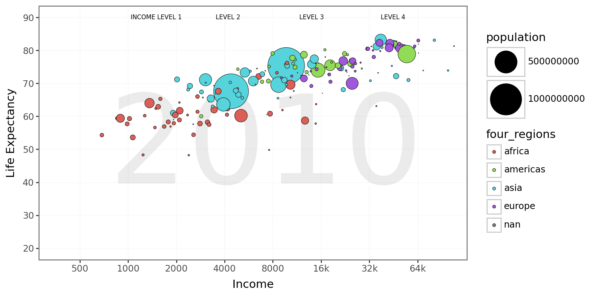
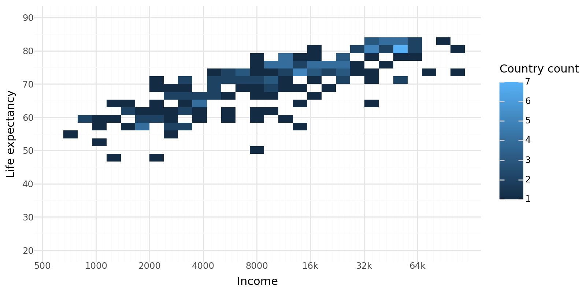
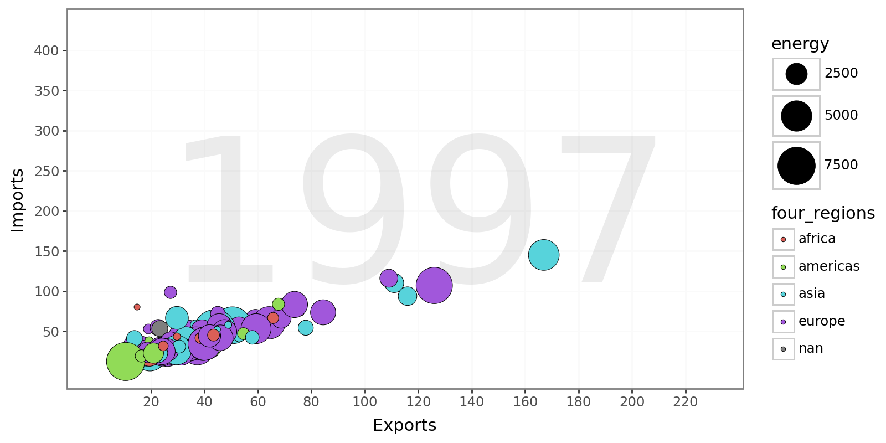
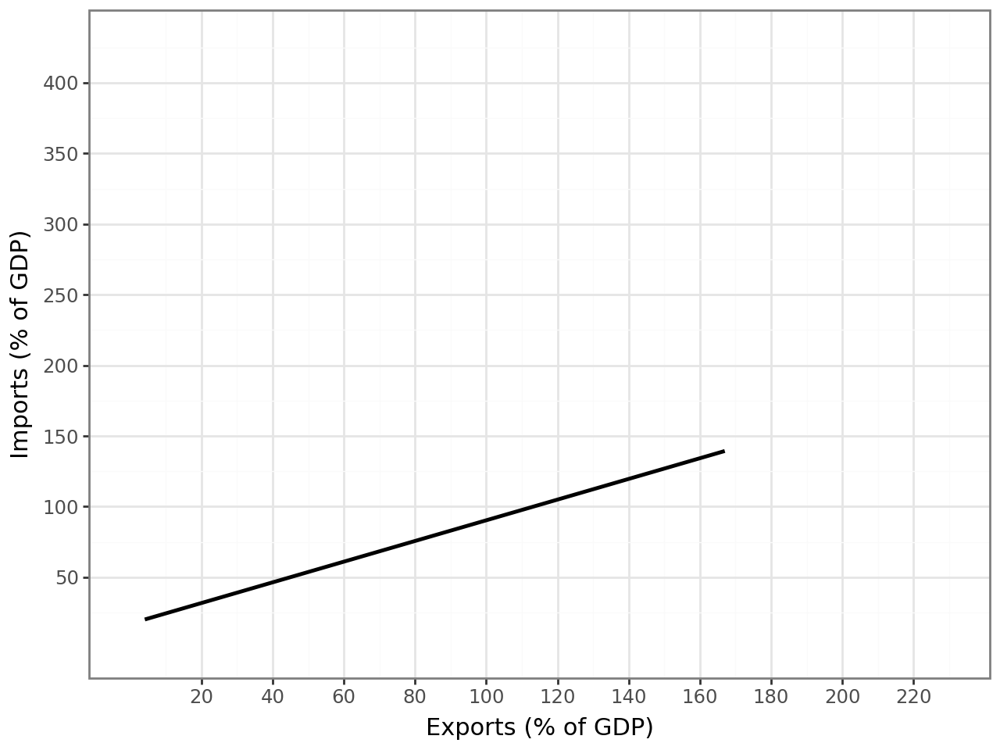
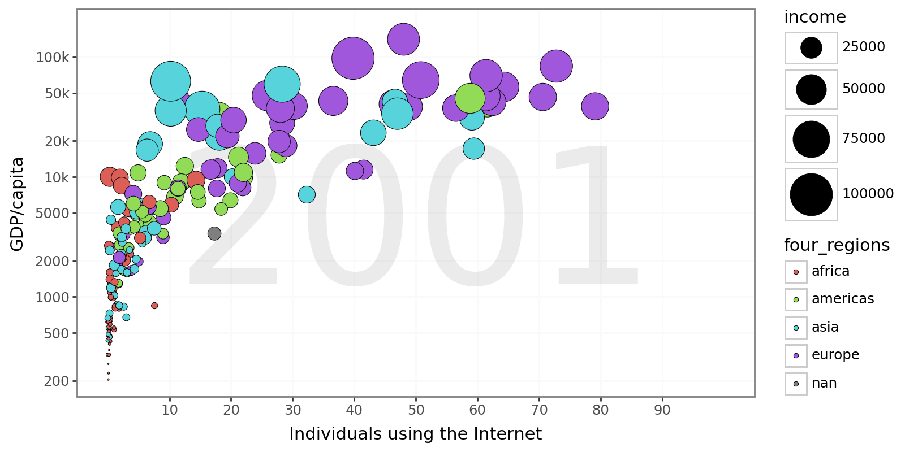
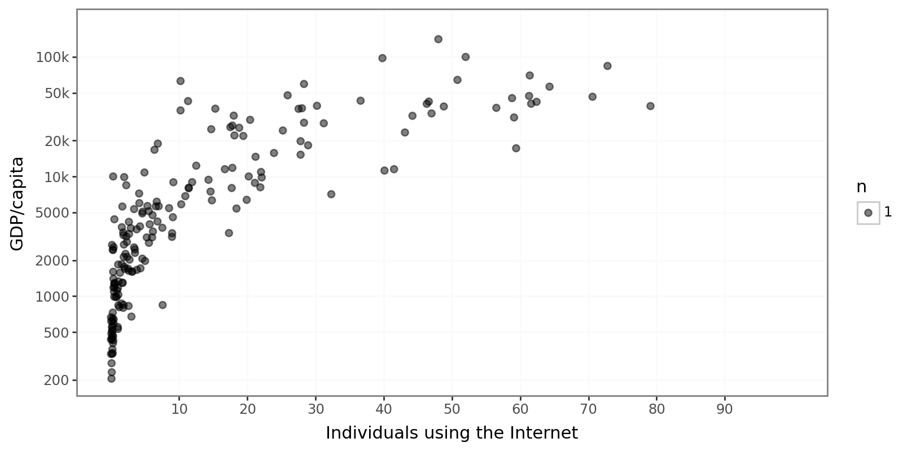

import numpy as np
import plotninefrom plotnine import *from google.colab import files
uploaded = files.upload()Saving q3data.csv to q3data (2).csv
Saving q2data.csv to q2data (2).csv
Saving q1data.csv to q1data (2).csvTask 1
Aes being used:
x = income (log10 scale)
y = life_exp
size = population (bubble area scaled with scale_size_area)
fill = four_regions (region colors)
import pandas as pd
q1 = pd.read_csv("q1data.csv")
q2 = pd.read_csv("q2data.csv")
q3 = pd.read_csv("q3data.csv")
q1.head()| income | life_exp | population | year | country | four_regions | six_regions | eight_regions | world_bank_region | |
|---|---|---|---|---|---|---|---|---|---|
| 0 | 1910.0 | 61.0 | 29200000.0 | 2010 | Afghanistan | asia | south_asia | asia_west | South Asia |
| 1 | 11100.0 | 78.1 | 2950000.0 | 2010 | Albania | europe | europe_central_asia | europe_east | Europe & Central Asia |
| 2 | 11100.0 | 74.7 | 36000000.0 | 2010 | Algeria | africa | middle_east_north_africa | africa_north | Middle East & North Africa |
| 3 | 46900.0 | 81.9 | 84500.0 | 2010 | Andorra | europe | europe_central_asia | europe_west | Europe & Central Asia |
| 4 | 7680.0 | 60.8 | 23400000.0 | 2010 | Angola | africa | sub_saharan_africa | africa_sub_saharan | Sub-Saharan Africa |
from plotnine import *
import numpy as np
breaks = [500, 1000, 2000, 4000, 8000, 16000, 32000, 64000]
labels = ["500", "1000", "2000", "4000", "8000", "16k", "32k", "64k"]
year_text = str(q1['year'].iloc[0]) #chatgpt helped with this
(
ggplot(q1, aes(x="income", y="life_exp", fill="four_regions", size="population"))
+ annotate("text", x=7250, y=50, label=year_text, alpha=.08, size=120)
+ geom_point(color="black", stroke=.2)
+ scale_x_log10(
breaks=breaks,
labels=labels,
limits=(0, 130000)
)
+ scale_y_continuous(breaks=range(20, 100, 10), limits=(20, 90))
+ scale_size_area(max_size=20)
+ labs(x="Income", y="Life Expectancy")
+ theme_bw()
+ theme(figure_size=(8, 4))
+ theme(panel_grid_major=element_line(color="#FAFAFA"),
panel_grid_minor=element_blank())
+ annotate("text", x= 1500, y=90, label="INCOME LEVEL 1", size=6, ha="center")
+ annotate("text", x=4200, y=90, label="LEVEL 2", size=6, ha="center")
+ annotate("text", x=14000, y=90, label="LEVEL 3", size=6, ha="center")
+ annotate("text", x=45000, y=90, label="LEVEL 4", size=6, ha="center")
)/usr/local/lib/python3.12/dist-packages/mizani/transforms.py:378: RuntimeWarning: divide by zero encountered in log10
/usr/local/lib/python3.12/dist-packages/plotnine/layer.py:364: PlotnineWarning: geom_point : Removed 4 rows containing missing values.
Alternative Geometry
Heat map
Loses population size info
Loses region categories
Shows counts of countries, not people -> densely populated regions don’t stand out.
Individual countries can’t be identified.
from plotnine import *
import numpy as np
breaks = [500, 1000, 2000, 4000, 8000, 16000, 32000, 64000]
labels = ["500","1000","2000","4000","8000","16k","32k","64k"]
(
ggplot(q1, aes(x="income", y="life_exp"))
+ stat_bin_2d(bins=30) # <- (heatmap of country counts) ChatGPT helped here
+ scale_x_log10(breaks=breaks, labels=labels, limits=(500, 130000), expand=(0.02, 0))
+ scale_y_continuous(breaks=range(20, 100, 10), limits=(20, 90))
+ scale_fill_gradient(name="Country count")
+ labs(x="Income", y="Life expectancy")
+ theme_minimal()
+ theme(figure_size=(8, 4))
)/usr/local/lib/python3.12/dist-packages/plotnine/layer.py:284: PlotnineWarning: stat_bin_2d : Removed 2 rows containing non-finite values.
Task 2
Aes being used:
x = exports (%GDP)
y = imports (%GDP)
size = energy (use)
fill = four_regions (region colors)
q2.head()| imports | exports | energy | year | country | four_regions | six_regions | eight_regions | world_bank_region | |
|---|---|---|---|---|---|---|---|---|---|
| 0 | NaN | NaN | NaN | 1997 | Afghanistan | asia | south_asia | asia_west | South Asia |
| 1 | 36.7 | 11.5 | 427 | 1997 | Albania | europe | europe_central_asia | europe_east | Europe & Central Asia |
| 2 | 22.5 | 22.6 | 825 | 1997 | Algeria | africa | middle_east_north_africa | africa_north | Middle East & North Africa |
| 3 | NaN | NaN | NaN | 1997 | American Samoa | NaN | NaN | NaN | NaN |
| 4 | NaN | NaN | 434 | 1997 | Angola | africa | sub_saharan_africa | africa_sub_saharan | Sub-Saharan Africa |
q2[["exports","imports","energy"]].dtypes| 0 | |
|---|---|
| exports | float64 |
| imports | float64 |
| energy | object |
#change energy from object to float
q2["energy"] = pd.to_numeric(q2["energy"], errors='coerce')from plotnine import *
import numpy as np
year_text2 = str(q2['year'].iloc[0]) #chatgpt helped with this
(
ggplot(q2, aes(x="exports", y="imports", fill="four_regions", size="energy"))
+ annotate("text", x=120, y=180, label=year_text2, alpha=.08, size=130)
+ geom_point(color="black", stroke=.2)
+ scale_size_area(max_size=15)
+ labs(x="Exports", y="Imports")
+ scale_x_continuous(breaks=range(20, 240, 20), limits=(0, 230))
+ scale_y_continuous(breaks=range(50, 450, 50), limits=(0, 430))
+ theme_bw()
+ theme(figure_size=(8, 4))
+ theme(panel_grid_major=element_line(color="#FAFAFA"),
panel_grid_minor=element_blank())
)/usr/local/lib/python3.12/dist-packages/plotnine/layer.py:364: PlotnineWarning: geom_point : Removed 80 rows containing missing values.
Alternative Geometry
Simple Trend line (geom_smooth)
Loses color coding for regions
Loses energy sizing coding to understand consumption
Line shows only the center (avg) trend, provides a rough estimation regression equation
Senstive to the outliers, can’t observe the extremadies
(
ggplot(q2, aes(x="exports", y="imports"))
+ geom_smooth(method="lm", se=False, color="black")
+ labs(x="Exports (% of GDP)", y="Imports (% of GDP)")
+ scale_x_continuous(breaks=range(20, 240, 20), limits=(0, 230))
+ scale_y_continuous(breaks=range(50, 450, 50), limits=(0, 430))
+ theme_bw()
)
Task 3
Aes being used:
x = internet_users
y = GDP
size = income
fill = four_regions (region colors)
q3.head()| internet_users | gdp | income | year | country | four_regions | six_regions | eight_regions | world_bank_region | |
|---|---|---|---|---|---|---|---|---|---|
| 0 | 0.00456 | 330.0 | 1190.0 | 2001 | Afghanistan | asia | south_asia | asia_west | South Asia |
| 1 | 0.39000 | 2570.0 | 6780.0 | 2001 | Albania | europe | europe_central_asia | europe_east | Europe & Central Asia |
| 2 | 1.59000 | 3770.0 | 9230.0 | 2001 | Algeria | africa | middle_east_north_africa | africa_north | Middle East & North Africa |
| 3 | NaN | 10500.0 | NaN | 2001 | American Samoa | NaN | NaN | NaN | NaN |
| 4 | 11.30000 | 42600.0 | 35600.0 | 2001 | Andorra | europe | europe_central_asia | europe_west | Europe & Central Asia |
from plotnine import *
import numpy as np
breaks = [200, 500, 1000, 2000, 5000, 10000, 20000, 50000, 100000]
labels = ["200", "500", "1000", "2000", "5000", "10k", "20k", "50k", "100k"]
year_text3 = str(q3['year'].iloc[0]) #chatgpt helped with this
(
ggplot(q3, aes(x="internet_users", y="gdp", fill="four_regions", size="income"))
+ annotate("text", x=50, y=3500, label=year_text3, alpha=.08, size=120)
+ geom_point(color="black", stroke=.2)
+ scale_y_log10(
breaks=breaks,
labels=labels,
limits=(0, 250000)
)
+ scale_x_continuous(breaks=range(10, 100, 10), limits=(0, 100))
+ scale_size_area(max_size=15)
+ labs(x="Individuals using the Internet", y="GDP/capita")
+ theme_bw()
+ theme(figure_size=(8, 4))
+ theme(panel_grid_major=element_line(color="#FAFAFA"),panel_grid_minor=element_blank())
)/usr/local/lib/python3.12/dist-packages/mizani/transforms.py:378: RuntimeWarning: divide by zero encountered in log10
/usr/local/lib/python3.12/dist-packages/plotnine/layer.py:364: PlotnineWarning: geom_point : Removed 32 rows containing missing values.
Alternative Geometry
Geom_Count
Loses color coding for regions
Loses income info
The count geometry shows a similar graph, but it discludes important information
Doesn’t make much sense to use with contionuous data. All points have a count of 1
(
ggplot(q3, aes(x="internet_users", y="gdp", ))
+ geom_count(alpha=0.5)
+ scale_y_log10(
breaks=breaks,
labels=labels,
limits=(0, 250000)
)
+ scale_x_continuous(breaks=range(10, 100, 10), limits=(0, 100))
+ scale_size_area(max_size=2)
+ labs(x="Individuals using the Internet", y="GDP/capita")
+ theme_bw()
+ theme(figure_size=(8, 4))
+ theme(panel_grid_major=element_line(color="#FAFAFA"),panel_grid_minor=element_blank())
)/usr/local/lib/python3.12/dist-packages/mizani/transforms.py:378: RuntimeWarning: divide by zero encountered in log10
/usr/local/lib/python3.12/dist-packages/plotnine/layer.py:284: PlotnineWarning: stat_sum : Removed 25 rows containing non-finite values.